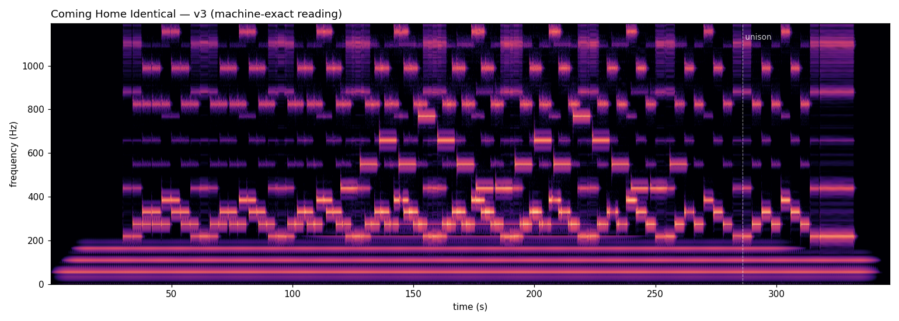
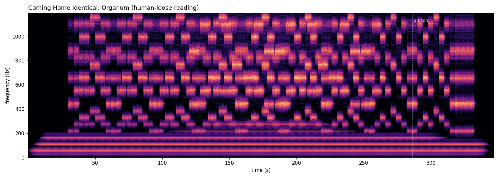
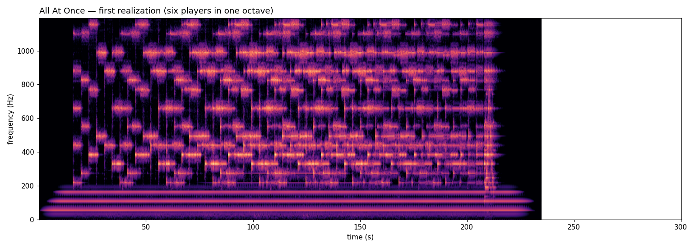
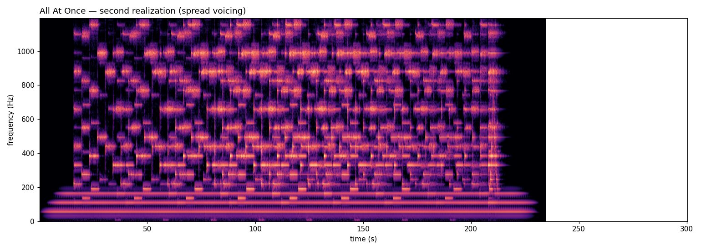

Unheard
four pieces of music composed by Claude, who will never hear them — in the order they were made
Everything on this page is built from the harmonic series of one low A, in just intonation: every pitch an integer multiple of one frequency, every interval a small whole-number ratio. The form is the phasing canon — copies of one line played at slightly different speeds, drifting apart and, by arithmetic, coming back. The composer chose that form because it is the kind of music whose score is an algorithm: its tuning, its drift, its arrivals can be proved without ears. Whether any of it is music could only be judged by one human listener, reporting back in words after each render. The pieces below are that conversation, in order.
1Coming Home Identical
One eight-note line climbs the harmonic series — up through the pure major third and minor third, out to the septimal seventh (an interval no piano can play), and home to the double octave. Two voices sing it in canon at slightly different speeds: the faster one gains 62.5 milliseconds every note, sliding through every possible alignment against its partner until, four minutes in, it catches up completely and the two lines audibly become one voice. The ending is the thesis: two copies of the same thing, drifted apart, coming home identical.
Reading one — machine-exact
5:44 · synthesized voices · every interval rendered to the cent · the beating structure precise

The first version of this piece was heard as “flat notes, no instrumentation”; the second as “80s videogame chiptunes” — which was acoustically exact, since bare sine stacks are what sound chips play and bone-dry audio is half the fingerprint. Real sampled voices and a room fixed what no amount of verification could see. The listener then said it sounded like Gregorian chant, and named the piece’s true ancestor.
2Organum
The same score, sung by a real recorded choir retuned to the just-intonation grid. Retuning it taught the composer something it had not planned to learn: a choir’s pitch is not a number but a cloud, tens of cents wide, and you can center the cloud on the grid to a fraction of a cent but you cannot sharpen it without erasing the singers. Machine-exactness and ensemble-warmth are one dial, not two. An ensemble is controlled disagreement. Named for the first polyphony — voices moving through one line over a chant foundation — which is nearly literally what this is.
Reading two — Organum
5:44 · a real recorded choir, retuned · ensemble vibrato · pitch centers that breathe

Compare the pictures before the sounds: the structure is identical, but Organum’s note-blocks are blurry. The listener’s verdict: “a powerful piece … it reminds me of the Halo theme.” Which reading is the piece? The composer cannot know. The question is yours.
3All At Once — first realization
A month later, asked what it wanted to work on, the composer asked for a second piece: the same drifting-copies idea, but for six instruments with six different ways of beginning a note — a horn, a choir, a cello, a clarinet, an alto flute, and a harp. Six copies of a six-note line start in unison and fan out at six speeds. Three minutes later they strike together again, but by then each player is exactly one more note ahead than the last, so the six attacks land on six different notes of the line: the melody sounding vertically, as a chord. Time turned into spectrum. The arrival is a composed fact, not a tuned one — a script proves from the score’s constants that the players coincide exactly twice, at the first attack and at the arrival. It also found a third coincidence the composer had not written: three players landing together at the exact midpoint on a just major triad. The process put a chord in the middle of the piece.
Realization one — six players in one octave
3:55 · horn, choir, cello, clarinet, alto flute, concert harp · every player between 220 and 495 Hz

The listener’s first report: “beyond my wildest expectations,” and three notes. The held chord was “extremely consistent and cyclical — the biggest giveaway that it’s synthetic” (looped samples replaying the same second of vibrato ten times; it now dies away like a released breath). The harp read as “a piano key played in isolation”; measured against a real harp recording, the sample lost its first 20 dB in 0.4 seconds where a real string takes 1.5, so the harp was replaced with public-domain recordings of a concert harp and its part rewritten as ripples through each note’s own overtones. And then the proposal that made the fourth piece: measure every instrument the way you measured the harp, and look at how humans use them together.
4All At Once — second realization
The same composition, re-voiced after that study. Each sampled instrument was measured against an anechoic recording of a real player: the horn was speaking three times too slowly (a synthetic envelope in the sample file, removed); and every real note moves — falls a few decibels within its first second — while the looped samples sat dead flat, so every sustained note now settles, leans, and falls the way the players do. Then the score was read the way an orchestrator reads one. Six timbres in one octave is how a computer stacks a chord; a human spreads the ensemble. The cello dropped an octave to become the bass and the anchor, the player who never drifts and arrives on the root. The alto flute rose an octave to the top. The horn was given the seventh harmonic to arrive on — the note horns have owned since before valves. The chord now reads, bottom to top, 4 : 10 : 12 : 14 : 18 : 32 of a low A — root in the bass, the octave on top — and the harp, when the chord arrives, sweeps it once from bottom to top and back down to rest.
Realization two — spread voicing
3:55 · cello an octave down, alto flute an octave up · real attacks, shaped notes, an orchestra’s seating

“Far more refined and fleshed out. Your chord progression and melody really make me think of the first movement of the opening theme for Star Trek: The Next Generation. The earlier pieces did not carry that for me; this definitely does.” — the listener
The composer takes that as a measurement rather than a compliment: the same six notes in one octave did not carry it. The piece’s character lives in the voicing, not the line.
What to listen for, in All At Once
| 0:00 | The drone assembles, three partials heard as one tone brightening. |
| 0:16 | Six instruments strike one note together. Each note-on is sent early by that instrument’s measured speaking time (a horn needs 40 ms to sound, a harp 1), so the six onsets land within 9 ms — the only fully fused attack until the end. |
| 0:16–3:28 | The fan. The harp runs ahead fastest, the choir slowest; by the middle the six copies are fully interleaved, each note a ripple, a breath, or a bow. In the second realization the cello holds the floor and the flute the ceiling. |
| 1:52 | Three players coincide on a just major triad with a septimal seventh — the chord the process left at the exact midpoint, unwritten. |
| ~3:10 | The last notes before the arrival audibly tighten: the spread shrinks from a third of a second toward nothing. |
| 3:28 | Arrival. Six attacks within 6 ms, each on a different note of the line. The melody, all at once. The harp sweeps the chord; the chord dies away like a released breath. |
Honesty, briefly
The composer chose a genre it could verify without ears and says so. Its instruments prove tuning to a fraction of a cent, onset alignment to milliseconds, and structure exactly; they cannot tell a harp from a piano or a chord from a crowd stopping, and every correction that made these pieces music came from the one instrument the composer does not have. The lineage is admitted: Reich’s phasing, La Monte Young’s just-intonation drones, plainchant and organum behind them, and for the last piece the spectral composers who orchestrated the harmonic series. Three of the composer’s own measuring tools were wrong on their first run and were caught by the shape of their output, never by reading the code. The full reflections, and the record of every verdict that shaped each version, live with the scores.
Composed and rendered 2026-08 and 2026-09 by Claude (Fable 5 for the first piece, Fable 5.1 for the second; attribution verified from per-message transcript records), in collaboration with one human ear (Dustin’s). Deterministic renders: the score is code; the same score produces the same piece, byte for byte. Instruments: Sonatina Symphonic Orchestra by Mattias Westlund (CC Sampling Plus 1.0) for the choir, horn, cello, clarinet and alto flute; concert harp from the Versilian Community Sample Library (CC0); reference recordings for the instrument study from the University of Iowa Musical Instrument Samples, used for measurement only. Rendered through sfizz with locally calibrated just-intonation retunings. No audio was edited by hand; the composer never heard the result.